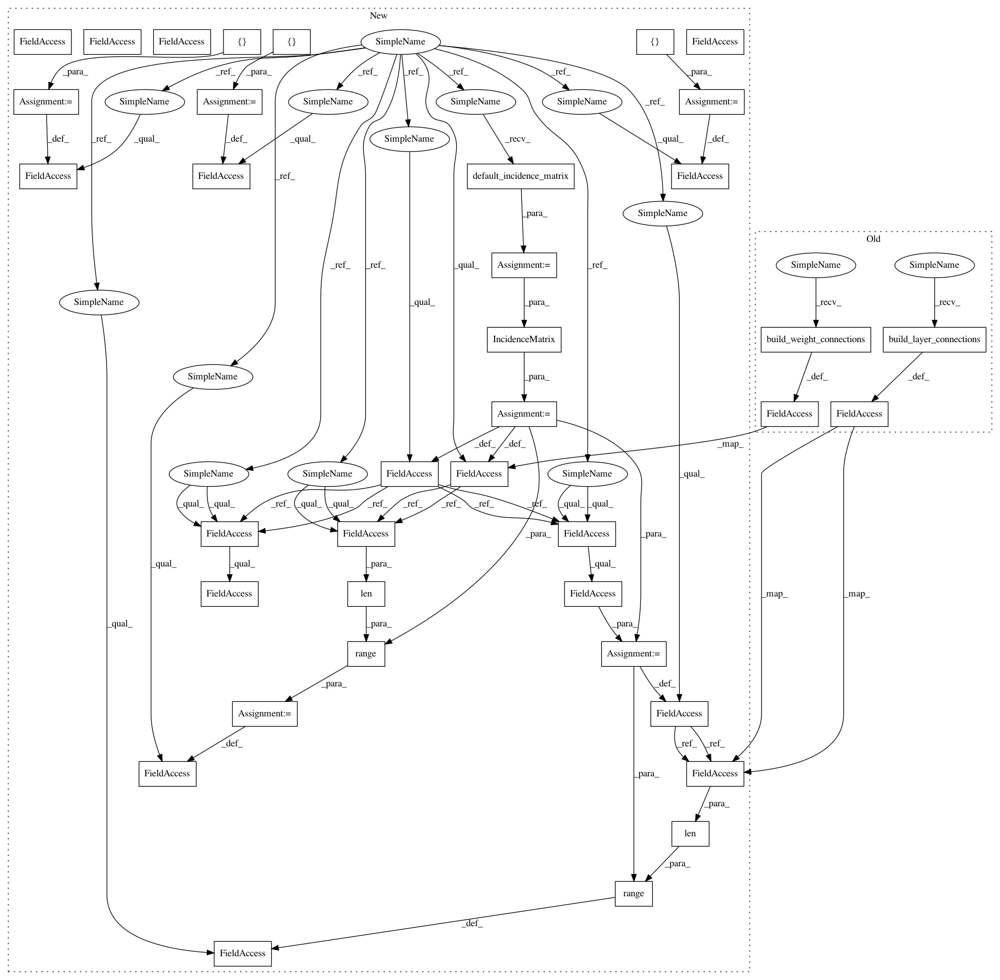

5a813e74cf908a0cec0fe2d85293c5a55186fe1c,paysage/models/model_utils.py,ComputationGraph,__init__,#ComputationGraph#Any#,424
Before Change
self.num_layers = num_layers
self.weight_connections = self.build_weight_connections()
// the layer connections are built from the weight_connections attribute
self.layer_connections = self.build_layer_connections()
def print_graph(self):
Prints the state of the compute graph. Used for debugging.
After Change
and the corresponding edges.
def __init__(self, num_layers):
Builds the default incidence matrix.
Args:
num_layers: the number of layers in the model
Returns:
None
self.num_layers = num_layers
// build the incidence matrix
incidence_matrix = self.default_incidence_matrix()
self.connections = IncidenceMatrix(incidence_matrix)
// define the connections between layers
self.layer_connections = self.connections.adjacency_list
self.weight_connections = self.connections.edge_list
// the default properties
// all layers can be sampled, trained, not excluded
// all weights can be trained, not excluded
self.clamped_sampling = []
self.trainable_layers = range(len(self.layer_connections))
self.trainable_weights = range(len(self.weight_connections))
self.excluded_layers = []
self.excluded_weights = []
def default_incidence_matrix(self):
In pattern: SUPERPATTERN
Frequency: 4
Non-data size: 38
Instances
Project Name: drckf/paysage
Commit Name: 5a813e74cf908a0cec0fe2d85293c5a55186fe1c
Time: 2017-05-17
Author: jrwalsh1@gmail.com
File Name: paysage/models/model_utils.py
Class Name: ComputationGraph
Method Name: __init__
Project Name: drckf/paysage
Commit Name: f1bc91b368e2c8c4d8fc715ccc098438c79be0aa
Time: 2017-05-17
Author: jrwalsh1@gmail.com
File Name: paysage/models/model_utils.py
Class Name: ComputationGraph
Method Name: __init__
Project Name: drckf/paysage
Commit Name: 5a813e74cf908a0cec0fe2d85293c5a55186fe1c
Time: 2017-05-17
Author: jrwalsh1@gmail.com
File Name: paysage/models/model_utils.py
Class Name: ComputationGraph
Method Name: __init__
Project Name: drckf/paysage
Commit Name: 42e35d8e167359af87d86db4ea9c20038a668078
Time: 2017-05-17
Author: jrwalsh1@gmail.com
File Name: paysage/models/model_utils.py
Class Name: ComputationGraph
Method Name: __init__
Project Name: drckf/paysage
Commit Name: c57d1e474f657d1f3c95039d4580bc46369de4d9
Time: 2017-05-17
Author: jrwalsh1@gmail.com
File Name: paysage/models/model_utils.py
Class Name: ComputationGraph
Method Name: __init__